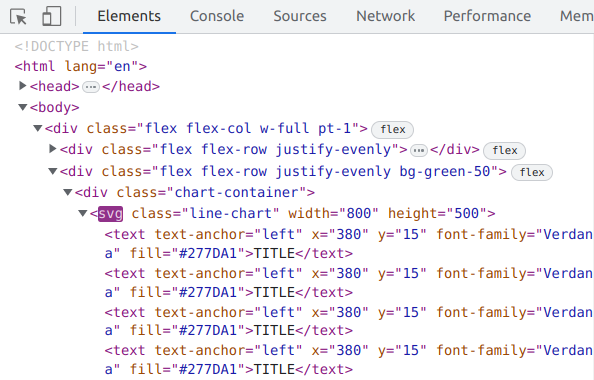

Apr 2, 2023
Dynamically updated chart with scrolling x-axis works in React!
Apr 4, 2023
Update a chart based on d3no-data
Back to deno.
I don't know how to get a reference to the chart for calling the update function.
New approach:
Modify the d3no-data library itself.
Download the code and put it into a folder named library.
Change the import statements from
import { BarChart } from "https://deno.land/x/d3nodata@v0.1.3.1/charts.ts";
to
import { BarChart } from "../library/charts.ts";
Works!
How to call the update function in the library module BarChart.tsx?
The useEffect hook will be called every time the variable in the array change.
useEffect(() => {
//Runs on the first render
//And any time any dependency value changes
}, [prop, state]);
https://www.w3schools.com/react/react_useeffect.asp
Thos works, but some errors in the updated chart appear, for example wrong y-axis scale.
Apr 20, 2023
x axis vertical tick lines disappear after removing and adding x axis
This shows how to examine the svg structure in the elements inspector.
https://subscription.packtpub.com/book/web-development/9781782162162/5/ch05lvl1sec38/drawing-grid-lines
Observation:
before removing x-axis
<line stroke="currentColor" y2="-420" stroke-width="0.5" opacity="0.3">
after removing and adding x-axis
<line stroke="currentColor" y2="6" stroke-width:="" opacity:="">
When I change the y2 value to -420, the vertical line re-appears.
Apr 28, 2023
Work on contributing to d3nodata continues
Issues to resolve:
when updating the chart, and if
addLegend, addLabel, and/or addTooltip is enabled,
we add a new legend, label, tooltips to the chart
potentially causing memory issues.
This can be verified by looking at the elements in the console of the browser:

A text element "TITLE" is unnecessarily added in each cycle.